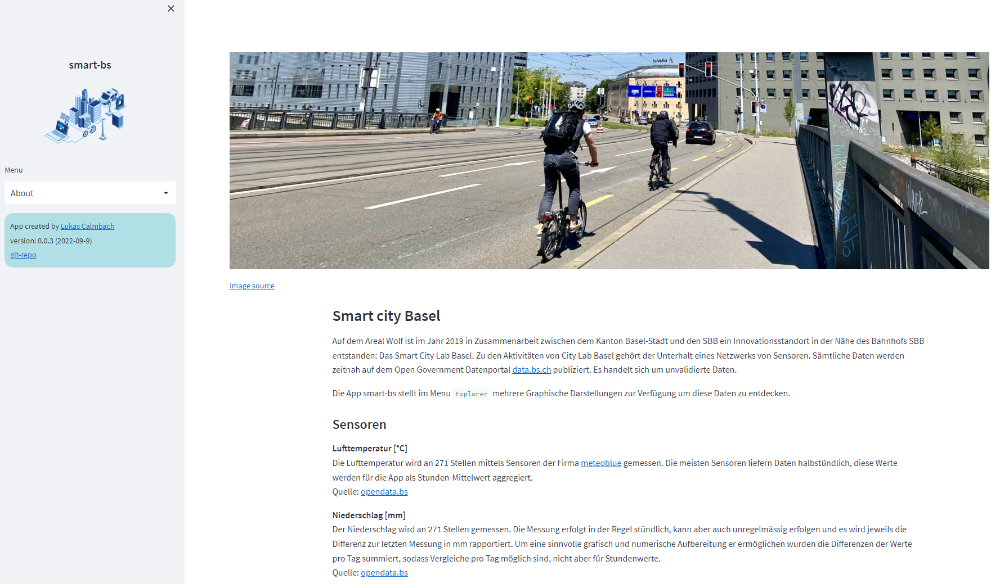
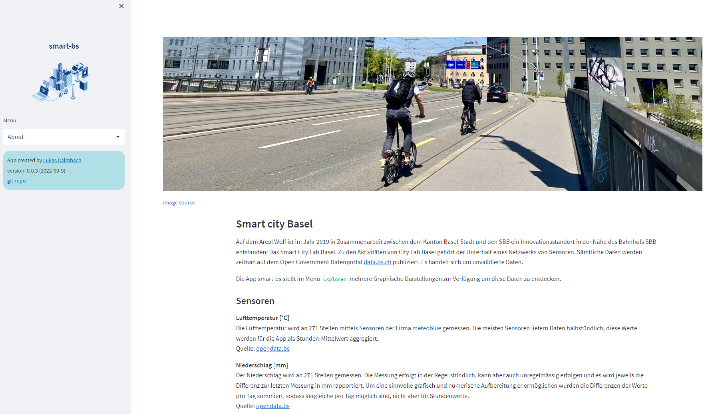

Info

Die Info Seite fast den Zweck der Applikation zusammen und gibt einen Überblick der unterstützten Sensoren. Über den Menubefehl Explorer gelangt man auf das eigentliche Dashboard.

Die Info Seite fast den Zweck der Applikation zusammen und gibt einen Überblick der unterstützten Sensoren. Über den Menubefehl Explorer gelangt man auf das eigentliche Dashboard.